Lab 4: Multiscale representation and image enhancements
Contents
clc; clear all; close all;
Part A
G0 = imread('me.jpg'); G0 = im2double(rgb2gray(G0)); G0 = imresize(G0,[256 256]); figure; imshow(G0); title('Original Image'); figure; imhist(G0); title('Intensity Histogram of Original Image')


Part B
g = fspecial('gaussian',100,2.5); s = size(g); g = padarray(g,[(256-s(1))/2 (256-s(1))/2],0,'both'); figure imagesc(g); title('Gaussian Filter') figure; imagesc(log(abs(fftshift(fft2(g))))) title('FFT of Lowpass filter')

Part C
G1 = imfilter(G0,g); k = 1; figure; imshow(G1) title(strcat('Low passed image with k=',num2str(k))); figure; imagesc(log(abs(fftshift(fft2(G1))))) title(strcat('FFT of Lowpassed Image with k=',num2str(k))); figure; imshow(imresize(G1, [256/(2^k) 256/(2^k)])); title(strcat('Filtered Image Resized to ',num2str(256/(2^k)))) figure; imagesc(log(abs(fftshift(fft2(imresize(G1, [256/(2^k) 256/(2^k)])))))) title(strcat('FFT of Lowpassed Resized Image with k=',num2str(k))); G2 = imfilter(G1,g); k = 2; figure; imshow(G2) title(strcat('Low passed image with k=',num2str(k))); figure; imagesc(log(abs(fftshift(fft2(G2))))) title(strcat('FFT of Lowpassed Image with k=',num2str(k))); figure; imshow(imresize(G2, [256/(2^k) 256/(2^k)])); title(strcat('Filtered Image Resized to ',num2str(256/(2^k)))) figure; imagesc(log(abs(fftshift(fft2(imresize(G2, [256/(2^k) 256/(2^k)])))))) title(strcat('FFT of Lowpassed Resized Image with k=',num2str(k))); G3 = imfilter(G2,g); k = 2; figure; imshow(G3) title(strcat('Low passed image with k=',num2str(k))); figure; imagesc(log(abs(fftshift(fft2(G3))))) title(strcat('FFT of Lowpassed Image with k=',num2str(k))); figure; imshow(imresize(G3, [256/(2^k) 256/(2^k)])); title(strcat('Filtered Image Resized to ',num2str(256/(2^k)))) figure; imagesc(log(abs(fftshift(fft2(imresize(G3, [256/(2^k) 256/(2^k)])))))) title(strcat('FFT of Lowpassed Resized Image with k=',num2str(k)));


Part D
L1 = imsubtract(G1,G0); figure; imshow(L1); title('Laplace 1'); figure; imagesc(log(abs(fftshift(fft2(L1))))) title('FFT of Laplac Image 1'); figure; imshow(imresize(L1, [128 128])); title('Laplac Image Resized to 128') figure; imagesc(log(abs(fftshift(fft2(imresize(L1, [128 128])))))) title('FFT of Laplac Resized Image 1'); L2 = imsubtract(G2,G1); figure; imshow(L2); title('Laplace 2'); figure; imagesc(log(abs(fftshift(fft2(L2))))) title('FFT of Laplac Image 2'); figure; imshow(imresize(L2, [64 64])); title('Laplac Image Resized to 64') figure; imagesc(log(abs(fftshift(fft2(imresize(L2, [64 64])))))) title('FFT of Laplac Resized Image 2'); L3 = imsubtract(G3,G2); figure; imshow(L3); title('Laplace 3'); figure; imagesc(log(abs(fftshift(fft2(L3))))) title('FFT of Laplac Image 3'); figure; imshow(imresize(L3, [32 32])); title('Laplac Image Resized to 32') figure; imagesc(log(abs(fftshift(fft2(imresize(L3, [32 32])))))) title('FFT of Laplac Resized Image 1');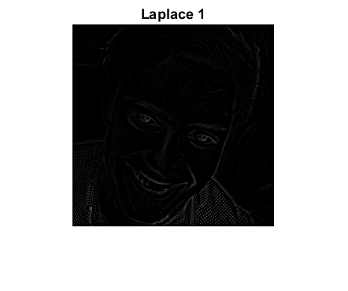 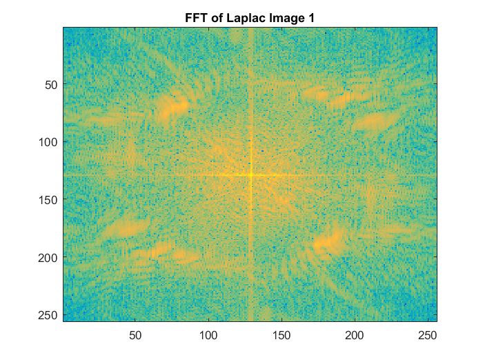


 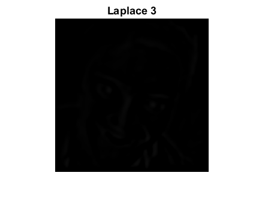 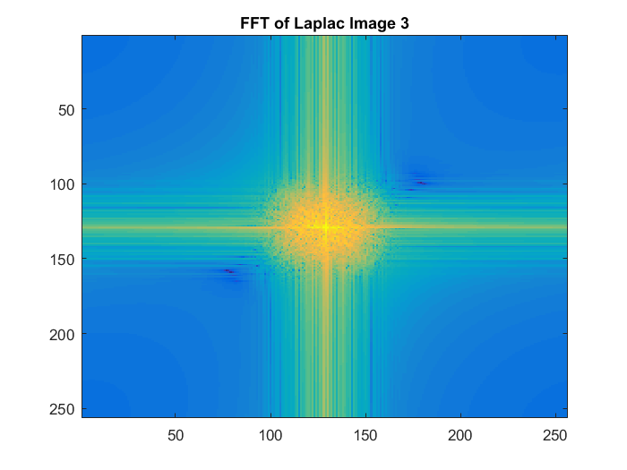
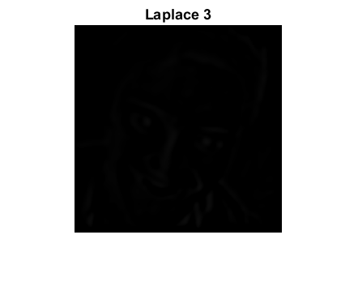 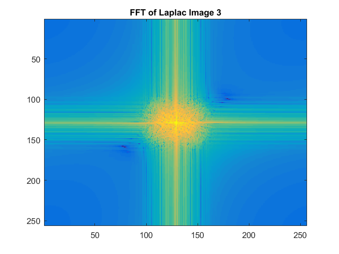  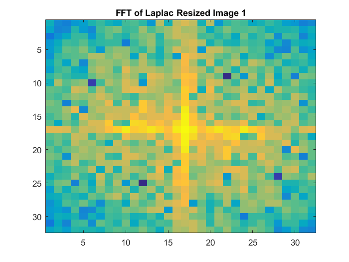
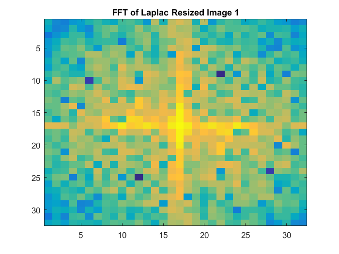 Part E
C = zeros(256,256,3); for i = 1:3 if i == 1 [CA1, CH1, CV1, CD1] = dwt2(G0, 'haar', 'mode', 'per'); C_1 = [CA1 CV1; CH1 CD1]; elseif i == 2 [CA2, CH2, CV2, CD2] = dwt2(CA1, 'haar', 'mode', 'per'); C_2 = [CA2 CV2; CH2 CD2]; C_1 = [C_2 CV1; CH1 CD1]; elseif i ==3 [CA3, CH3, CV3, CD3] = dwt2(CA2, 'haar', 'mode', 'per'); C_3 = [CA3 CV3; CH3 CD3]; C_2 = [C_3 CV2; CH2 CD2]; C_1 = [C_2 CV1; CH1 CD1]; end C(:,:,i) = C_1; figure; imagesc(C(:,:,i)); title(strcat('Wavelet ',num2str(i))); end


Part F
CA_2 = idwt2(CA3, CH3, CV3, CD3, 'haar', 'mode', 'per'); CA_1 = idwt2(CA_2, CH2, CV2, CD2, 'haar', 'mode', 'per'); CA_0 = idwt2(CA_1, CH1, CV1, CD1, 'haar', 'mode', 'per'); figure; imagesc(CA_0); title('Image from Wavelet');
Part G
z = zeros(32,32); z2 = zeros(64,64); z3 = zeros(128,128);
CA3
CA_2 = idwt2(CA3, z, z, z, 'haar', 'mode', 'per'); CA_1 = idwt2(CA_2, z2, z2, z2, 'haar', 'mode', 'per'); CA_0 = idwt2(CA_1, z3, z3, z3, 'haar', 'mode', 'per'); figure; imagesc(CA_0); title('CA3'); figure; imagesc(log(abs(fftshift(fft2(CA_0))))); title('FFT CA3');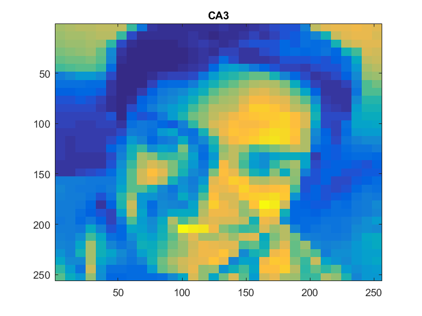

CH3
CA_2 = idwt2(z, CH3, z, z, 'haar', 'mode', 'per'); CA_1 = idwt2(CA_2, z2, z2, z2, 'haar', 'mode', 'per'); CA_0 = idwt2(CA_1, z3, z3, z3, 'haar', 'mode', 'per'); figure; imagesc(CA_0); title('CH3'); figure; imagesc(log(abs(fftshift(fft2(CA_0))))); title('FFT CH3');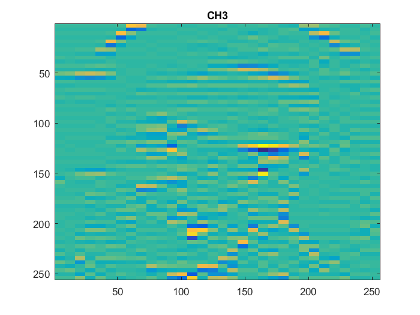 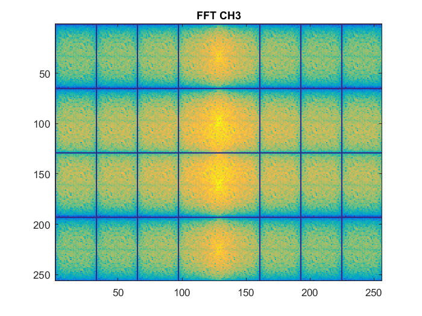
CV3
CA_2 = idwt2(z, z, CV3, z, 'haar', 'mode', 'per'); CA_1 = idwt2(CA_2, z2, z2, z2, 'haar', 'mode', 'per'); CA_0 = idwt2(CA_1, z3, z3, z3, 'haar', 'mode', 'per'); figure; imagesc(CA_0); title('CV3'); figure; imagesc(log(abs(fftshift(fft2(CA_0))))); title('FFT CV3');
CD3
CA_2 = idwt2(z, z, z, CD3, 'haar', 'mode', 'per'); CA_1 = idwt2(CA_2, z2, z2, z2, 'haar', 'mode', 'per'); CA_0 = idwt2(CA_1, z3, z3, z3, 'haar', 'mode', 'per'); figure; imagesc(CA_0); title('CD3'); figure; imagesc(log(abs(fftshift(fft2(CA_0))))); title('FFT CD3');
CH2
CA_1 = idwt2(z2, CH2, z2, z2, 'haar', 'mode', 'per'); CA_0 = idwt2(CA_1, z3, z3, z3, 'haar', 'mode', 'per'); figure; imagesc(CA_0); title('CH2'); figure; imagesc(log(abs(fftshift(fft2(CA_0))))); title('FFT CH2');
CV2
CA_1 = idwt2(z2, z2, CV2, z2, 'haar', 'mode', 'per'); CA_0 = idwt2(CA_1, z3, z3, z3, 'haar', 'mode', 'per'); figure; imagesc(CA_0); title('CV2'); figure; imagesc(log(abs(fftshift(fft2(CA_0))))); title('FFT CV2');
CD2
CA_1 = idwt2(z2, z2, z2, CD2, 'haar', 'mode', 'per'); CA_0 = idwt2(CA_1, z3, z3, z3, 'haar', 'mode', 'per'); figure; imagesc(CA_0); title('CD2'); figure; imagesc(log(abs(fftshift(fft2(CA_0))))); title('FFT CD2');
CH1
CA_0 = idwt2(z3, CH1, z3, z3, 'haar', 'mode', 'per'); figure; imagesc(CA_0); title('CH1'); figure; imagesc(log(abs(fftshift(fft2(CA_0))))); title('FFT CH1');
CV1
CA_0 = idwt2(z3, z3, CV1, z3, 'haar', 'mode', 'per'); figure; imagesc(CA_0); title('CV1'); figure; imagesc(log(abs(fftshift(fft2(CA_0))))); title('FFT CV1');
CD1
CA_0 = idwt2(z3, z3, z3, CD1, 'haar', 'mode', 'per'); figure; imagesc(CA_0); title('CD1'); figure; imagesc(log(abs(fftshift(fft2(CA_0))))); title('FFT CD1');